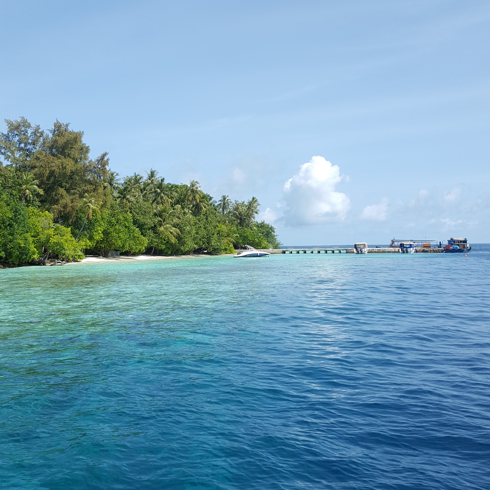
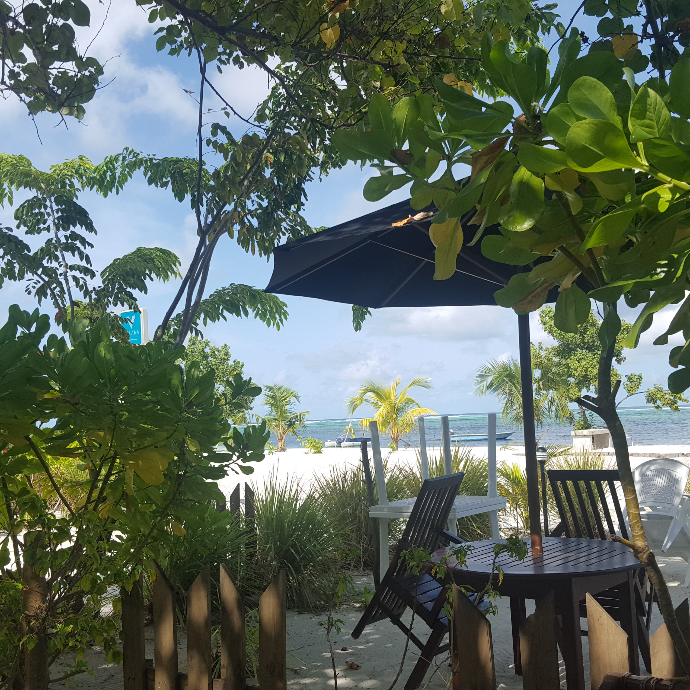
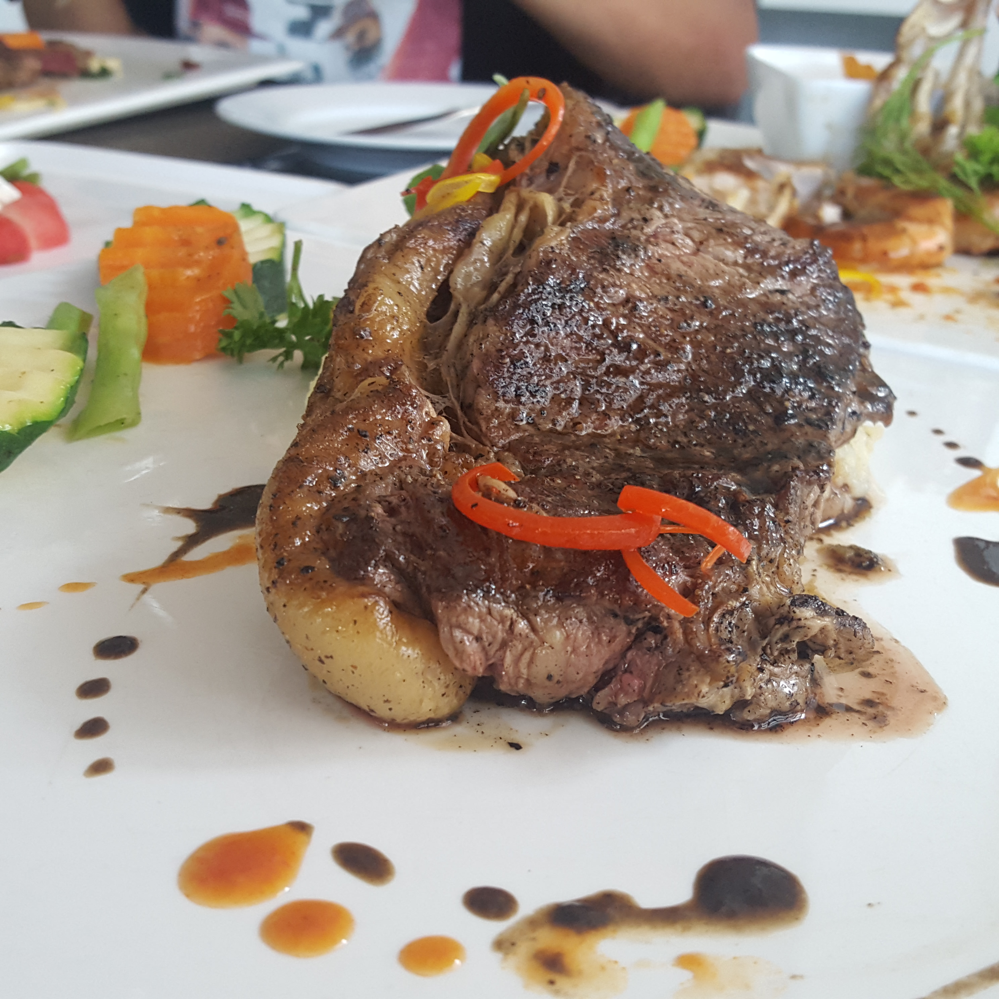
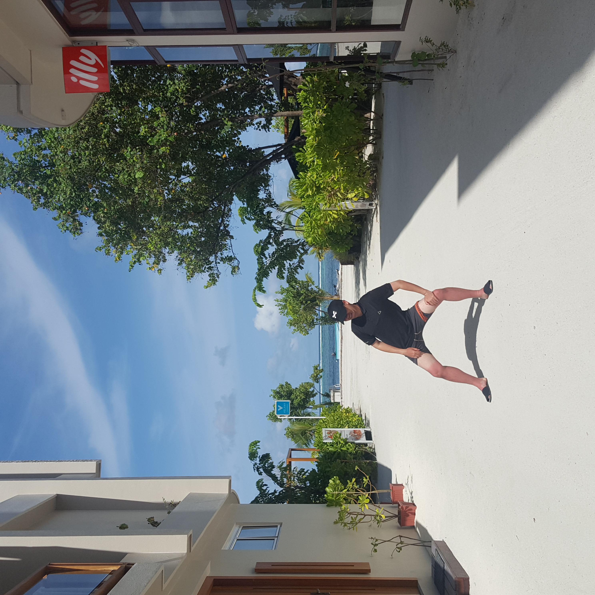
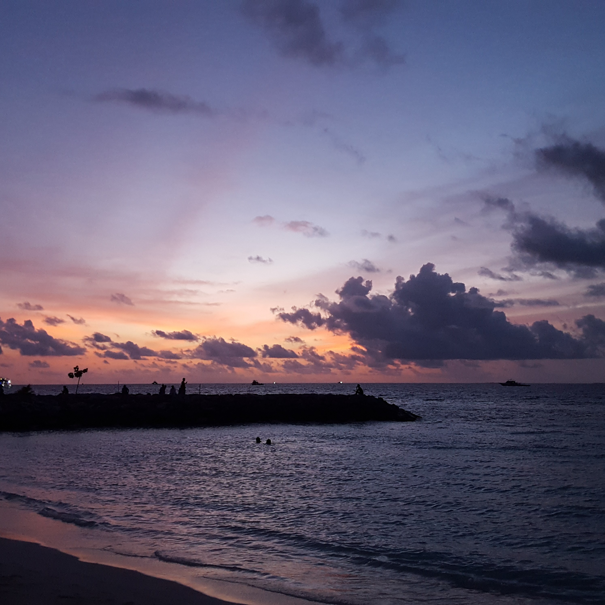

August, 20182018년 8월, 초 여름 방학. 홍콩 경유, 몰디브로 여행을 떠났었습니다. 몰디브는 인도 밑에 있는 조그만한 섬 나라 입니다. 세계에서 가장 유명한 휴양지 중 한곳 답게 따뜻한 햇살과 선선한 날씨가 좋았습니다. 바닷 바람은 시원했고, 파도는 적당히 치는게 물놀이 하기 너무 좋았습니다. 한국에서 찾아볼 수 없는 색다른 경험에 설레었던 기억이 납니다. |
 |
|  |
힐링 플레이스몰디브 곳곳은 야자수로 만들어진 그늘과 누구나 사용할 수 있는 해먹이 놓여져 있습니다. 야자수 그늘 진 해먹에 누워서 바다를 바라 볼 수 있는데 야자수 아래에서 눈을 감고 파도가 치는 소리를 들으면 천국이 따로 없습니다. 시험과 공부에 대한 걱정을 한 시름 놓고 아무 생각없이 파도와 함께 조용히 누워 조각잠을 잘 수 있는 곳을 찾는다면 이 곳이 최적의 장소입니다. |
겨우 찾은 레스토랑숙소가 몰디브 현지인들이 사는 섬에 잡은터라 신선한 육류를 섭취하기 힘들었습니다. 대부분 냉동 고기나 인스턴트 음식점이 있었는데 정말 고기가 그리운 나머지 한참을 검색해가며 찾았습니다. 셋째날에 겨우 찾은 레스토랑에서 몇 일 만에 먹은 소고기 스테이크는 제가 먹었던 고기중 TOP10 안에 들어갈 것입니다. |
 |
|  |
얕 본 햇살몰디브의 햇살은 그렇게 따갑진 않습니다. 그래서 너무 적도의 햇살을 제가 얕보았나 봅니다. 한창 바다 수영을 즐긴 다음 날 아침, 하반신이 너무 따가운것을 느끼며 일어난 순간 경악을 금치 못했습니다. 이미 수영복을 입은 곳을 제외한 모든 곳이 타버린걸 보고 후회에 빠졌습니다. 기왕 이렇게 된거 전 그대로 다녔지만, 이 곳에 가게 되는 여행객들은 꼭 썬크림을 바르세요. |
Freinds몰디브는 세계적인 휴양지 답게 각 국에서 친구들이 모입니다. 몰디브는 이슬람국가라 육지에서 술 마시기 어렵습니다. 시원한 맥주가 한창 땡기던 그때, 싱가포르와 이탈리아에서 온 친구들이 요트 위에서 마시면 괜찮다고 저를 데려가 주어 같이 좋은 시간을 보냈었습니다. 역시 먼저 온 다른 나라 친구들을 사귀어서 손해 볼 건 없는 것 같습니다. |
|
|  |
몰디브몰디브는 세계 온난화로 인해 점점 잠기고 있습니다. 해수면의 수위가 높아지면서 잠기고 있는 것인데 몰디브가 있는 인도양뿐만 아니라 태평양의 여러 국가도 비슷한 상황에 처해 있습니다. 아시아의 진주 같은, 아름다운 이 곳을 잃기 싫다는 생각이 들었습니다. |